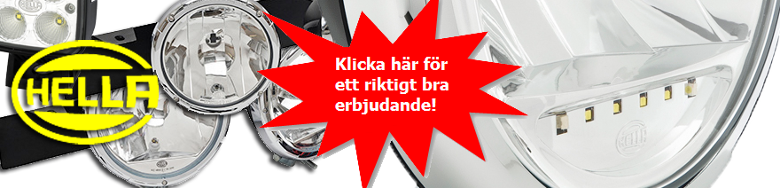
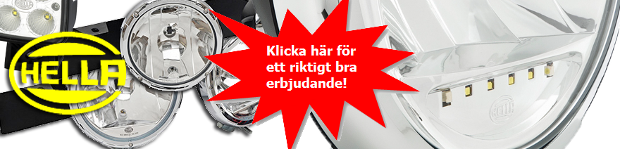

Defa Värme
Vad kan vara bättre än att starta dagen i en varm bil, utan snö och is på rutorna och med en förvärmd motor som därför startar lättare och släpper ut mindre skadliga avgaser? Kom in till oss. Vi hjälper dig att få en bra start på dagen!
Tester visar att en varm motor släpper ut upp till 80 procent mindre koloxid och kolväten de första kilometerna. Med DEFA bilvärme sätter du dig dessutom i en varm bil utan is och snö på rutorna och motorn är förvärmd och lättstartad.
ComfortKit II 1400
Kupévärmarsatsen innehåller anslutningssats, grenkabelsats och kupévärmare. Ett smidigt och prisvänligt alternativ, enkelt att anpassa och komplettera med t.ex en motorvärmare. Se kampanj.
Med appen DEFA Link och den tillhörande hårdvaran DEFA Link Hub kan du nu enkelt kontrollera ditt DEFA bilvärmesystem från din IPhone eller Android telefon, oavsett var i världen du befinner dig.
Ladda ner appen här:
Nu kan du enkelt styra DEFA:s bilvärmesystem direkt från din mobiltelefon. I denna nya, enkla och användarvänliga applikation kan du ange vilka tider du ska använda bilen, så ser systemet till att bilen är uppvärmd och klar när det är dags att ge sig iväg. Uppvärmningstiden varierar beronde på utetemperaturen för att minimera elförbrukning i största möjliga mån. Man kan även starta bilvärmesystemet direkt utan timer genom ett enkelt drag på reglaget i appen.
Via appen får du även reda på temperaturen inne i bilen och utomhus samt hur bra ditt bilbatteri mår.Om man skulle glömma att koppla in 230V kabeln till bilen meddelas det i applikationen när systemet försöker starta bilvärmesystemet, säger Jens Holmström, produktspecialist på DEFA.
Hårdvaran som heter DEFA Link Hub består av en enhet som kommunicerar via GPRS. Den både säljs och monteras i bilen av en Aukoriserad montör. DEFA Link fungerar endast ihop med ett DEFA Bilvärmesystem, och registrering och självtest av systemet sker via DEFA´s hemsida.När enheten är monterad och registrerad, visas den direkt i bilägarens DEFA Link app.
Bilägaren får även sin "egen" sida på http://www.defa.com där man kan administrera sina system, bl.a. uppdatera kontaktuppgifter och byta lösenord. Appen DEFA Link finns tillgänglig att ladda ner kostnadsfritt på Appstore och Play Store.